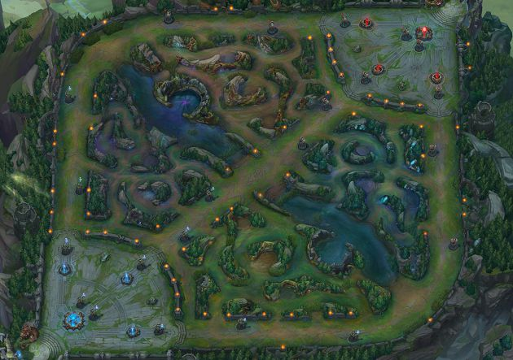
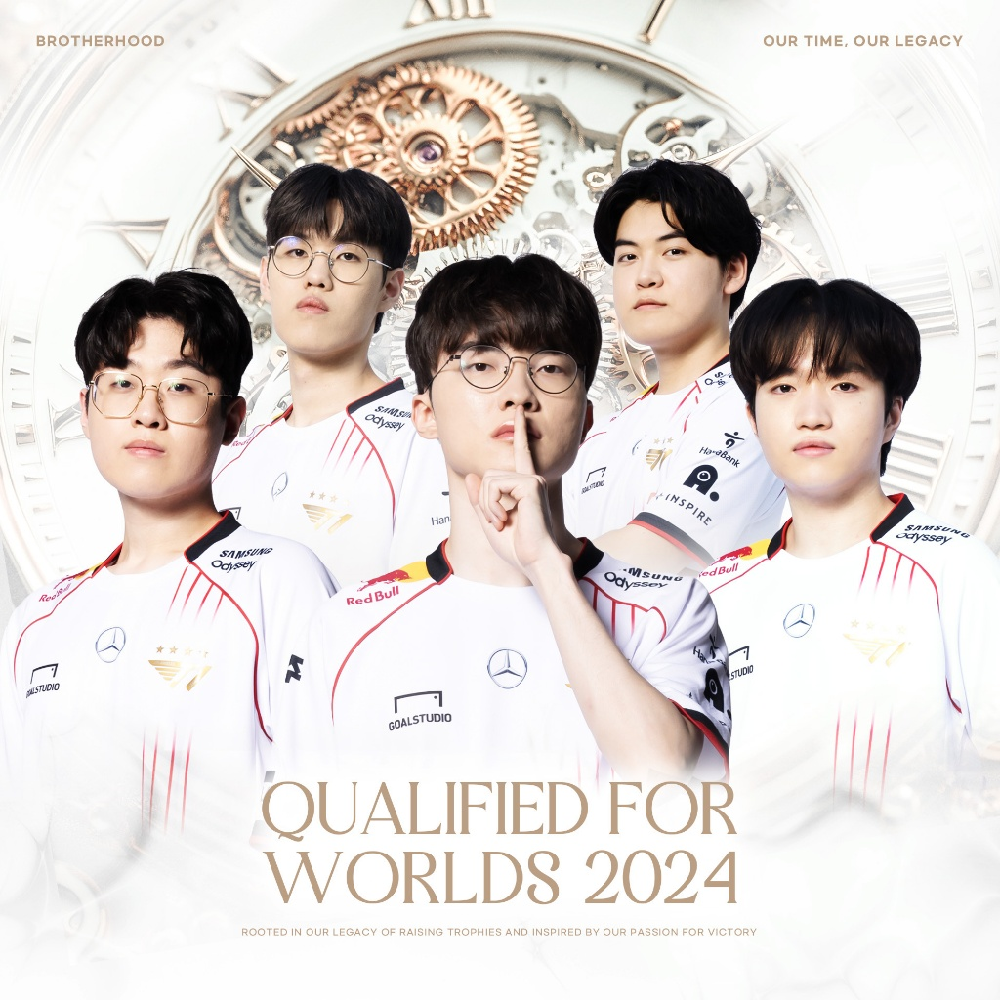

《英雄聯盟》玩法入門
× T1 六冠王朝傳奇
基於個人 LLM Wiki 知識庫編譯：從零基礎科普帶你認識《英雄聯盟》（League of Legends）的 5v5 攻城規則、中立資源與五路分工，並走進電競史上唯一締造世界賽「六冠」與「三連霸」的傳奇戰隊 T1。

2013 · 2015 · 2016 · 2023 · 2024 · 2025 WORLD CHAMPIONS
召喚峽谷基礎入門：5v5 攻城戰的核心規則
《英雄聯盟》（League of Legends, LoL）是一款 5v5 的 MOBA（多人線上戰鬥競技場）遊戲，平均每場約 25～45 分鐘。雙方各 5 名玩家從 1 級開始打怪賺錢、購買裝備，最終目標是摧毀敵方基地核心——主堡（Nexus）。
1. 英雄成長與重置 公平起點
每場比賽開始時，所有英雄皆為 1 級（最高 18 級）。累積經驗值升級並解鎖技能，購買的裝備僅限當局有效，下一場全部歸零重來，確保每場對局公平起跑。
2. 三路防禦塔與護甲 推線推進
地圖分為上、中、下三條兵線，每路各有 3 座防禦塔（加上主堡前 2 座，每方共 11 座）。前 14 分鐘防禦塔擁有「5 層護甲（Turret Plates）」，打破每層都能獲得額外金幣。
3. 水晶兵營與主堡 勝利關鍵
摧毀敵方「水晶兵營（Inhibitor）」後，己方會派出強化版「超級士兵」壓制對手（5 分鐘後兵營重生）。一路推進並擊破敵方主堡（Nexus）即贏得比賽。
決定比賽走向的三大中立物件（Neutral Objectives）
除了沿著兵線拆塔，河道兩側的強大中立生物是職業比賽爆發 5v5 團戰的核心導火線。搶下這些資源能為團隊帶來壓倒性優勢：
元素巨龍與龍魂 右下龍池
- 擊殺元素巨龍（Elemental Drakes）可獲得全場永久屬性加成。
- 率先擊殺 4 隻小龍的隊伍會取得強大的龍魂（Dragon Soul）並改變峽谷地形。
- 後期重生的遠古巨龍（Elder Dragon）更附帶斬殺殘血敵人的毀滅效果。
峽谷預示者 6 分鐘登場
- 位於左上河道男爵池，前期重要爭奪目標。
- 擊敗後可拾取「預示者之眼」，在線上召喚這隻巨獸強力撞擊敵方防禦塔。
- 是前期快速吃塔皮、滾動經濟雪球的利器。
納什男爵（巴龍） 20 分鐘登場
- 全場最強大的中立首領，20 分鐘取代預示者現身。
- 擊殺後全隊獲得 3 分鐘巴龍增益（Baron Buff），大幅強化周遭小兵的攻防與射程。
- T1 戰隊最擅長利用視野逼迫對手開戰並偷打巴龍一舉終結比賽。
英雄六大定位與電競選角（Draft / BP）入門
射手 Marksman AD / ADC
遠程持續物理輸出核心，後期傷害極高但體質脆弱（如 Vayne、Senna、Smolder）。
法師 Mage AP / APC
依賴技能造成高額魔法傷害或範圍控制，多走中路（如 Azir、Ahri、Veigar）。
刺客 Assassin 高爆發
高機動性、瞬間切入秒殺後排脆皮英雄（如 Zed、Talon、Katarina）。
坦克 Tank 前排開戰
高額生命與雙防，站在最前線吸收傷害並提供群體控制（如 K'Sante、Leona、Malphite）。
鬥士 Fighter 能扛能打
兼具坦度與持續輸出能力的近戰英雄，適合單挑與衝陣（如 Viego、Garen）。
輔助 Support 視野守護
提供護盾、治療、控制與全圖視野佈局（如 Thresh、Blitzcrank、Soraka）。
召喚峽谷五路分工（點擊地圖按鈕查看工作內容）

上路（Top Laner）
位於地圖最上方且遠離主要團隊資源的「孤島」單人線。上路選手需要極強的 1v1 對線抗壓能力，中後期負責在邊線帶線牽制（Split Push），並在團戰中擔任隊伍最堅實的前排坦克或衝排戰士。
T1 戰隊簡史：從 SKT 王朝到史無前例三連霸
2002–2012 創隊起源
前身為《星海爭霸》傳奇選手 BoxeR 創立的 Team Orion，2004 年由韓國 SK 電訊收購更名為 SK Telecom T1。2012 年底正式成立《英雄聯盟》分部。
2013–2017 SKT 三冠王朝
2013 年圍繞天才新人中路 Faker 建隊即奪得 S3 世界冠軍；2015、2016 年完成史上首次世界賽連霸並包辦 MSI 冠軍，建立無人能敵的紅色王朝。
2019–2026 T1 六冠傳奇
2019 年與美國 Comcast 合資更名為 T1（Faker 成為股東）。經歷重組後於 2023、2024、2025 締造史上唯一世界賽「三連霸」，累積隊史六冠（2025 財年更首度實現全年轉虧為盈）。
T1 冠軍陣容傳承：ZOFGK 與新世代延續
ZOFGK 黃金時代（2022–2024）
由 Zeus、Oner、Faker、Gumayusi、Keria 組成的五人陣容，寫下 2022 LCK 春季賽 18 勝 0 負全勝神話，並連續奪得 2023 首爾與 2024 倫敦兩座世界冠軍。
三連霸與 2026 新陣容（2025–2026）
2025 年上路補進 Doran，於成都決賽「電信大戰」3:2 力克 KT 完成史無前例三連霸（第六冠）；2026 年迎來新生代天才射手 Peyz 接棒下路重任，持續征戰世界賽場。
